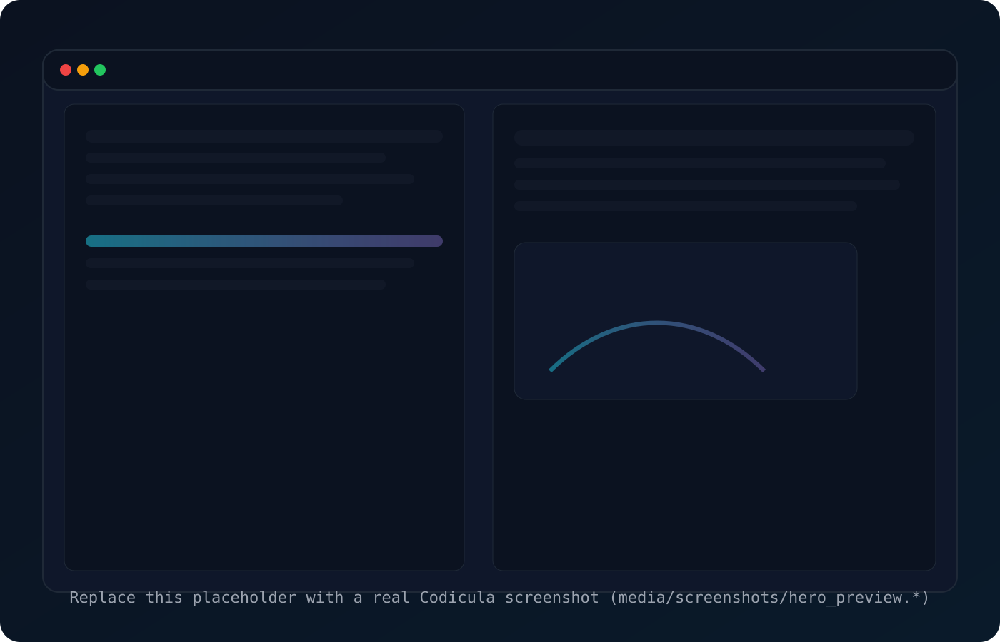
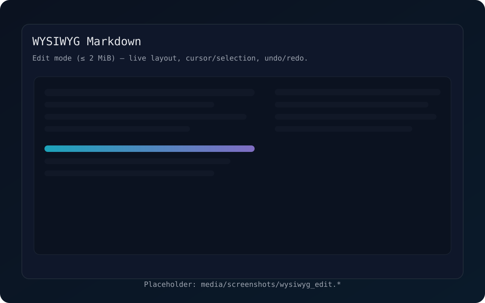
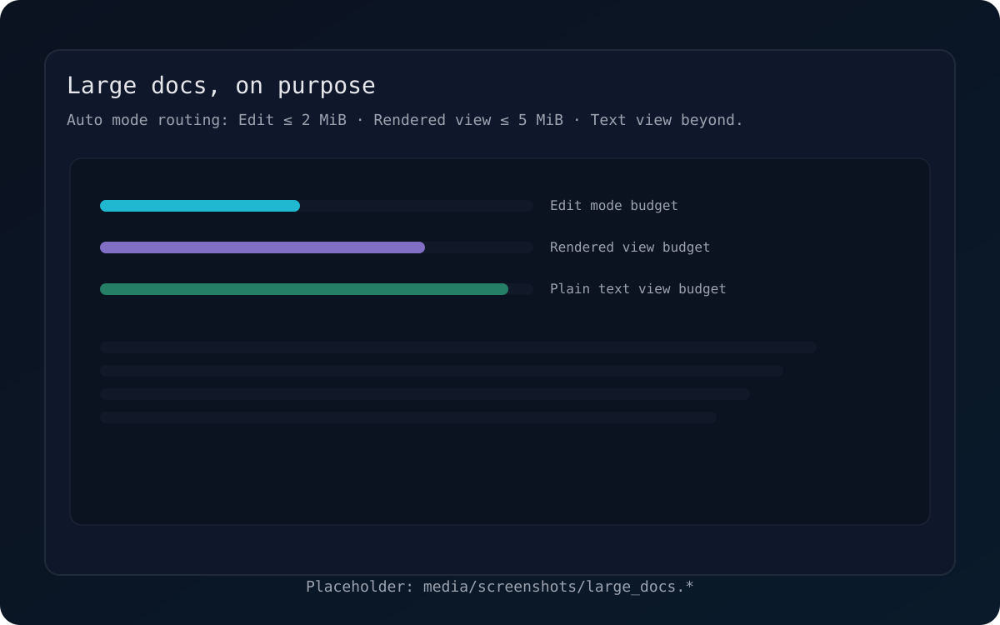
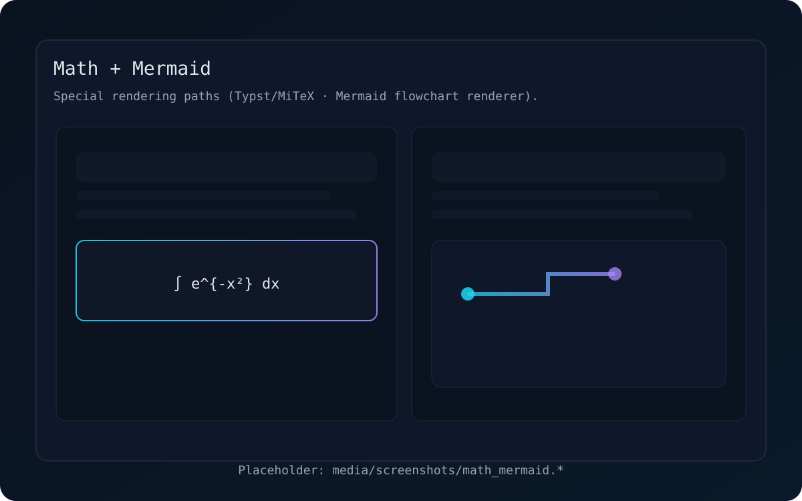

Vibe coding, but with a hard goal: a GPUI-native, WYSIWYG Markdown editor that stays smooth.
Edit: ≤ 2 MiB
Rendered view: ≤ 5 MiB
Text view beyond

Render blocks/inline into a real layout, with cursor + selection + undo/redo.
Edit ≤ 2 MiB. Rendered read-only ≤ 5 MiB. Fall back to text view beyond that.
Parse from rope chunks to avoid full document materialization in hot paths.
Dedicated renderers for display math and Mermaid flowcharts, with caching.
PDF via Typst, plus mdBook export pipeline foundations (multi-file, link rewrite).
Async image loading with budgets, plus sandboxed SVG rendering policy.
website/media/screenshots/ with the same filenames and refresh.

WYSIWYG layout, selection, and “feels-native” cursor movement.
media/screenshots/wysiwyg_edit.*
Mode routing that keeps interaction predictable instead of pretending everything is editable.
media/screenshots/large_docs.*
Display math and Mermaid flowcharts rendered as first-class blocks.
media/screenshots/math_mermaid.*website/media/posters/, videos in website/media/videos/.
media/videos/editing_loop.*
media/videos/export_loop.*
CI/CD publishes: Windows MSI + update ZIP, macOS universal DMG (+ app ZIP), Linux AppImage.